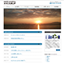
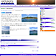

- baserbaserCMSに挑戦
- TempWordPressニュースサイト用オリジナルテンプレート
 ホテル練習用サイト
ホテル練習用サイト icedreamjsを全く使わないサイトデザイン
icedreamjsを全く使わないサイトデザイン- AOKI
 ｊQueryを使わない生のjsとcssのみのサイト
ｊQueryを使わない生のjsとcssのみのサイト - APIテスト
 RailsでAPIを作成しHTMLで受け取る
RailsでAPIを作成しHTMLで受け取る
埋め込みフォントのテスト 「リュウミン」
埋め込みフォントのテスト 「見出し明朝」
ホテル練習用サイトicedreamjsを全く使わないサイトデザインｊQueryを使わない生のjsとcssのみのサイトRailsでAPIを作成しHTMLで受け取る埋め込みフォントのテスト 「リュウミン」
埋め込みフォントのテスト 「見出し明朝」